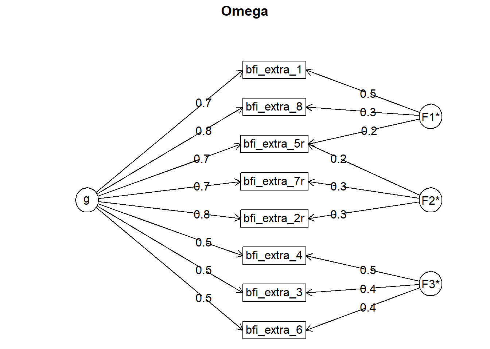
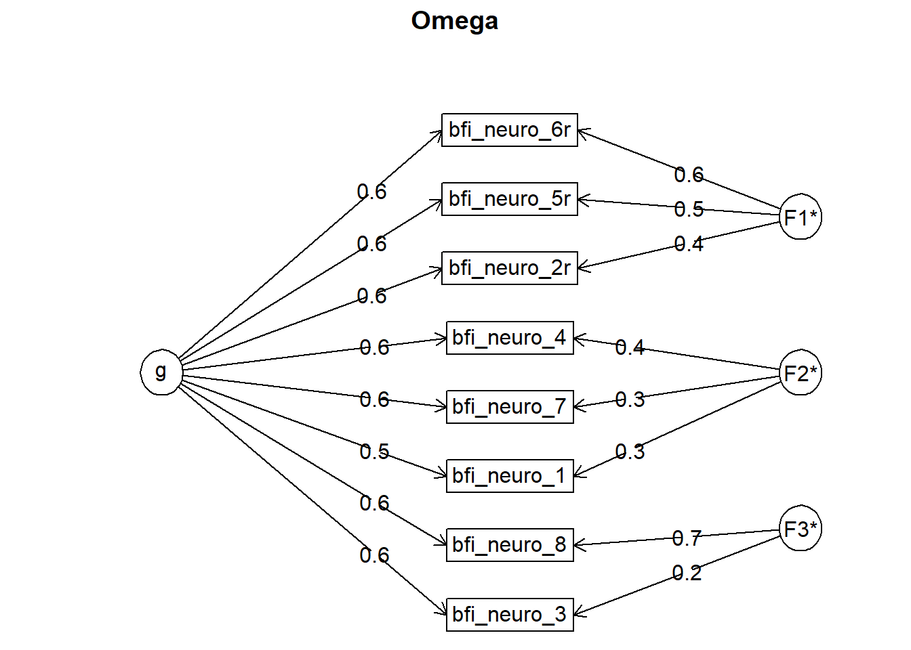
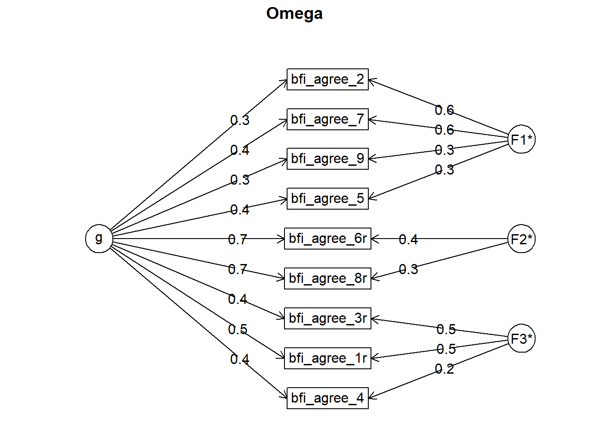
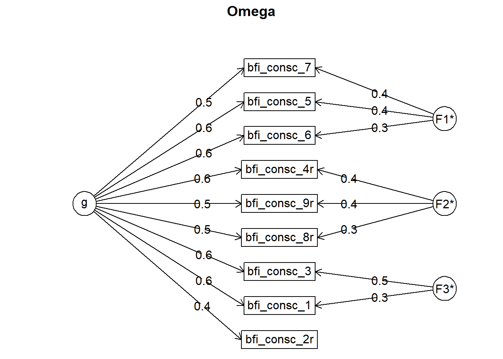
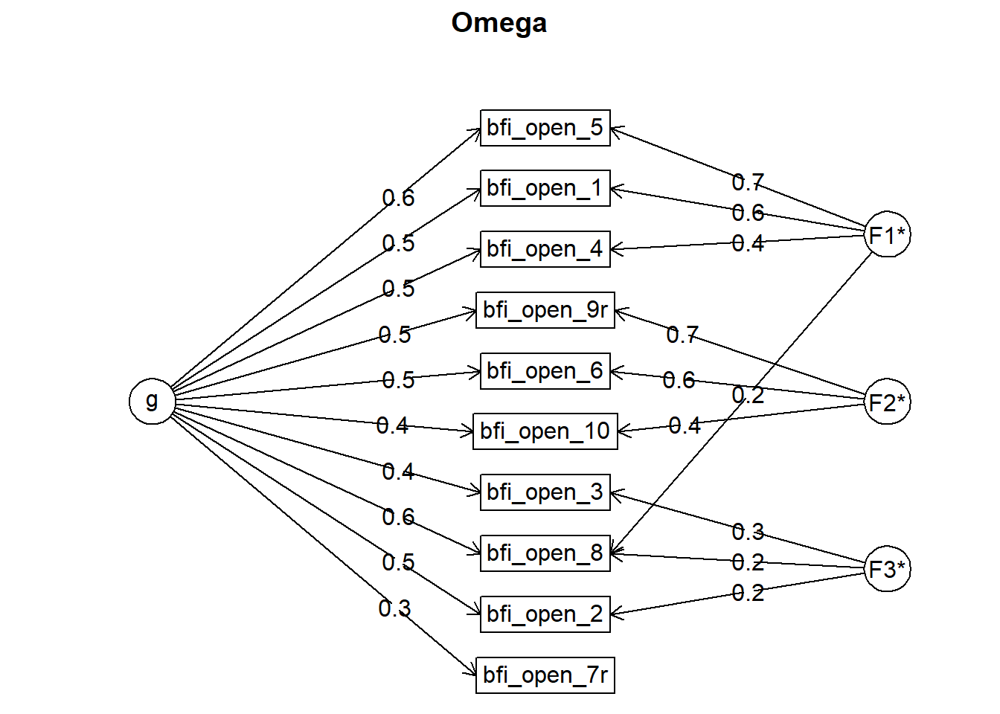
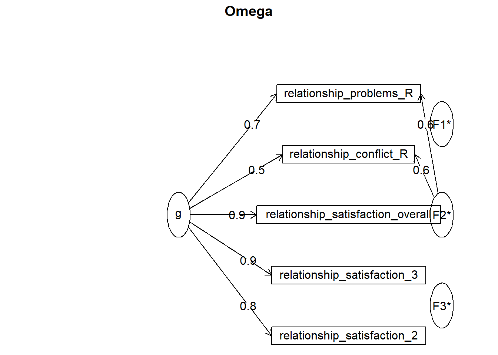

data = data %>%
mutate(attractiveness_partner = as.numeric(
(partner_attractiveness_face + partner_attractiveness_body)/2),
relationship_satisfaction = as.numeric(
(relationship_satisfaction_overall +
relationship_satisfaction_2 +
relationship_satisfaction_3 +
(6 - relationship_problems_R) +
(6 - relationship_conflict_R))/5))mean_sd_range1 = data %>%
select(session,
age, education_years,
bfi_extra, bfi_neuro, bfi_agree, bfi_consc, bfi_open,
religiosity,
diary_libido_mean, diary_sex_active_mean, diary_sex_active_sex_mean) %>%
pivot_longer(-session, names_to = "Variable", values_to = "Value") %>%
group_by(Variable) %>%
summarise(n = sum(!is.na(Value)),
mean = round(mean(Value, na.rm = T), 2),
sd = round(sd(Value, na.rm = T), 2),
min = round(min(Value, na.rm = T), 2),
max = round(max(Value, na.rm = T), 2))
mean_sd_range2 = data %>%
select(session,
attractiveness_partner,
relationship_satisfaction,
satisfaction_sexual_intercourse,
) %>%
pivot_longer(-session, names_to = "Variable", values_to = "Value") %>%
group_by(Variable) %>%
summarise(n = sum(!is.na(Value)),
mean = round(mean(Value, na.rm = T), 2),
sd = round(sd(Value, na.rm = T), 2),
min = round(min(Value, na.rm = T), 2),
max = round(max(Value, na.rm = T), 2))
mean_sd_range = data.frame(x = c(1:16)) %>%
cbind(Variable = c("age", "education_years", "net_income", "bfi_extra", "bfi_neuro", "bfi_agree", "bfi_consc", "bfi_open", "religiosity", "relationship_duration", "attractiveness_partner", "relationship_satisfaction", "satisfaction_sexual_intercourse","diary_libido_mean", "diary_sex_active_sex_mean", "diary_sex_active_mean")) %>%
select(-x)
mean_sd_range = left_join(mean_sd_range,
rbind(mean_sd_range1, mean_sd_range2),
by = "Variable")
kable(mean_sd_range)| Variable | n | mean | sd | min | max |
|---|---|---|---|---|---|
| age | 1185 | 25.04 | 5.08 | 18.00 | 49.00 |
| education_years | 1185 | 15.08 | 4.73 | 0.00 | 26.00 |
| net_income | NA | NA | NA | NA | NA |
| bfi_extra | 1185 | 3.46 | 0.78 | 1.12 | 5.00 |
| bfi_neuro | 1185 | 3.00 | 0.78 | 1.00 | 5.00 |
| bfi_agree | 1185 | 3.68 | 0.62 | 1.44 | 5.00 |
| bfi_consc | 1185 | 3.53 | 0.66 | 1.56 | 5.00 |
| bfi_open | 1185 | 3.78 | 0.61 | 1.50 | 5.00 |
| religiosity | 1185 | 2.21 | 1.34 | 1.00 | 6.00 |
| relationship_duration | NA | NA | NA | NA | NA |
| attractiveness_partner | 774 | 4.25 | 0.74 | 1.00 | 5.00 |
| relationship_satisfaction | 774 | 3.39 | 0.43 | 1.40 | 4.60 |
| satisfaction_sexual_intercourse | 774 | 4.00 | 1.05 | 1.00 | 5.00 |
| diary_libido_mean | 971 | 1.19 | 0.59 | 0.00 | 3.03 |
| diary_sex_active_sex_mean | 971 | 0.13 | 0.13 | 0.00 | 0.80 |
| diary_sex_active_mean | 971 | 0.32 | 0.19 | 0.00 | 0.96 |
cronbachs_alpha_bfi_extra = data %>%
select(starts_with("bfi_extra_")) %>%
psych::alpha()
cronbachs_alpha_bfi_extra##
## Reliability analysis
## Call: psych::alpha(x = .)
##
## raw_alpha std.alpha G6(smc) average_r S/N ase mean sd median_r
## 0.87 0.87 0.87 0.46 6.9 0.0054 3.5 0.78 0.43
##
## lower alpha upper 95% confidence boundaries
## 0.86 0.87 0.89
##
## Reliability if an item is dropped:
## raw_alpha std.alpha G6(smc) average_r S/N alpha se var.r med.r
## bfi_extra_1 0.85 0.85 0.85 0.45 5.8 0.0063 0.013 0.42
## bfi_extra_3 0.87 0.87 0.87 0.49 6.8 0.0056 0.015 0.45
## bfi_extra_2r 0.85 0.85 0.84 0.44 5.6 0.0067 0.012 0.42
## bfi_extra_4 0.87 0.86 0.86 0.48 6.4 0.0058 0.018 0.44
## bfi_extra_5r 0.85 0.85 0.84 0.45 5.6 0.0065 0.012 0.42
## bfi_extra_6 0.87 0.87 0.87 0.50 6.9 0.0055 0.014 0.45
## bfi_extra_7r 0.86 0.86 0.86 0.46 6.1 0.0061 0.015 0.42
## bfi_extra_8 0.85 0.84 0.84 0.44 5.4 0.0067 0.011 0.41
##
## Item statistics
## n raw.r std.r r.cor r.drop mean sd
## bfi_extra_1 1185 0.77 0.77 0.74 0.68 3.8 1.02
## bfi_extra_3 1185 0.60 0.62 0.54 0.50 3.5 0.92
## bfi_extra_2r 1185 0.81 0.80 0.78 0.73 3.3 1.14
## bfi_extra_4 1185 0.67 0.68 0.61 0.56 3.7 1.00
## bfi_extra_5r 1185 0.80 0.79 0.77 0.72 3.8 1.12
## bfi_extra_6 1185 0.60 0.61 0.52 0.48 3.4 1.01
## bfi_extra_7r 1185 0.74 0.72 0.67 0.63 2.7 1.23
## bfi_extra_8 1185 0.83 0.82 0.81 0.76 3.5 1.09
##
## Non missing response frequency for each item
## 1 2 3 4 5 miss
## bfi_extra_1 0.02 0.09 0.22 0.37 0.29 0
## bfi_extra_3 0.02 0.11 0.38 0.37 0.12 0
## bfi_extra_2r 0.06 0.21 0.25 0.32 0.16 0
## bfi_extra_4 0.02 0.10 0.23 0.41 0.23 0
## bfi_extra_5r 0.04 0.10 0.21 0.32 0.33 0
## bfi_extra_6 0.03 0.17 0.32 0.36 0.12 0
## bfi_extra_7r 0.18 0.33 0.21 0.19 0.09 0
## bfi_extra_8 0.04 0.13 0.27 0.36 0.20 0cronbachs_alpha_bfi_neuro = data %>%
select(starts_with("bfi_neuro_")) %>%
psych::alpha()
cronbachs_alpha_bfi_neuro##
## Reliability analysis
## Call: psych::alpha(x = .)
##
## raw_alpha std.alpha G6(smc) average_r S/N ase mean sd median_r
## 0.85 0.85 0.85 0.42 5.7 0.0067 3 0.78 0.4
##
## lower alpha upper 95% confidence boundaries
## 0.84 0.85 0.86
##
## Reliability if an item is dropped:
## raw_alpha std.alpha G6(smc) average_r S/N alpha se var.r med.r
## bfi_neuro_2r 0.83 0.83 0.82 0.40 4.7 0.0078 0.0062 0.40
## bfi_neuro_1 0.84 0.84 0.84 0.43 5.3 0.0072 0.0081 0.40
## bfi_neuro_3 0.82 0.83 0.82 0.40 4.7 0.0079 0.0088 0.39
## bfi_neuro_4 0.84 0.84 0.83 0.43 5.2 0.0073 0.0089 0.41
## bfi_neuro_5r 0.83 0.83 0.82 0.41 4.8 0.0077 0.0059 0.40
## bfi_neuro_8 0.84 0.84 0.83 0.42 5.2 0.0073 0.0083 0.41
## bfi_neuro_6r 0.83 0.83 0.82 0.41 4.8 0.0077 0.0046 0.40
## bfi_neuro_7 0.83 0.84 0.83 0.42 5.1 0.0074 0.0094 0.39
##
## Item statistics
## n raw.r std.r r.cor r.drop mean sd
## bfi_neuro_2r 1185 0.74 0.74 0.71 0.64 3.2 1.1
## bfi_neuro_1 1185 0.64 0.64 0.56 0.52 2.3 1.1
## bfi_neuro_3 1185 0.75 0.75 0.70 0.65 2.9 1.1
## bfi_neuro_4 1185 0.66 0.66 0.58 0.54 3.7 1.1
## bfi_neuro_5r 1185 0.72 0.73 0.69 0.63 2.9 1.1
## bfi_neuro_8 1185 0.67 0.67 0.60 0.55 3.2 1.2
## bfi_neuro_6r 1185 0.72 0.72 0.69 0.62 2.9 1.1
## bfi_neuro_7 1185 0.69 0.68 0.62 0.57 2.9 1.1
##
## Non missing response frequency for each item
## 1 2 3 4 5 miss
## bfi_neuro_2r 0.06 0.22 0.28 0.31 0.13 0
## bfi_neuro_1 0.30 0.33 0.22 0.11 0.04 0
## bfi_neuro_3 0.09 0.32 0.28 0.25 0.06 0
## bfi_neuro_4 0.03 0.14 0.20 0.35 0.28 0
## bfi_neuro_5r 0.09 0.29 0.32 0.23 0.07 0
## bfi_neuro_8 0.09 0.24 0.25 0.29 0.14 0
## bfi_neuro_6r 0.09 0.29 0.32 0.24 0.07 0
## bfi_neuro_7 0.10 0.30 0.27 0.24 0.10 0cronbachs_alpha_bfi_agree = data %>%
select(starts_with("bfi_agree_")) %>%
psych::alpha()
cronbachs_alpha_bfi_agree##
## Reliability analysis
## Call: psych::alpha(x = .)
##
## raw_alpha std.alpha G6(smc) average_r S/N ase mean sd median_r
## 0.76 0.76 0.77 0.26 3.2 0.01 3.7 0.62 0.26
##
## lower alpha upper 95% confidence boundaries
## 0.74 0.76 0.78
##
## Reliability if an item is dropped:
## raw_alpha std.alpha G6(smc) average_r S/N alpha se var.r med.r
## bfi_agree_2 0.75 0.74 0.75 0.27 2.9 0.011 0.0111 0.26
## bfi_agree_3r 0.75 0.75 0.75 0.27 3.0 0.011 0.0109 0.27
## bfi_agree_1r 0.74 0.74 0.74 0.26 2.8 0.011 0.0120 0.26
## bfi_agree_4 0.75 0.75 0.76 0.27 3.0 0.011 0.0134 0.26
## bfi_agree_5 0.75 0.75 0.75 0.27 2.9 0.011 0.0133 0.25
## bfi_agree_6r 0.72 0.73 0.72 0.25 2.7 0.012 0.0086 0.26
## bfi_agree_7 0.74 0.74 0.74 0.26 2.8 0.011 0.0119 0.25
## bfi_agree_8r 0.71 0.71 0.71 0.24 2.5 0.013 0.0067 0.24
## bfi_agree_9 0.75 0.75 0.76 0.27 3.0 0.010 0.0137 0.27
##
## Item statistics
## n raw.r std.r r.cor r.drop mean sd
## bfi_agree_2 1185 0.51 0.56 0.48 0.39 3.9 0.85
## bfi_agree_3r 1185 0.52 0.53 0.43 0.38 4.3 0.91
## bfi_agree_1r 1185 0.62 0.61 0.54 0.47 3.1 1.08
## bfi_agree_4 1185 0.56 0.54 0.44 0.39 3.3 1.16
## bfi_agree_5 1185 0.54 0.55 0.46 0.40 3.9 0.98
## bfi_agree_6r 1185 0.69 0.65 0.62 0.54 3.0 1.29
## bfi_agree_7 1185 0.54 0.59 0.52 0.43 4.2 0.78
## bfi_agree_8r 1185 0.76 0.72 0.72 0.63 3.3 1.27
## bfi_agree_9 1185 0.51 0.53 0.42 0.36 4.1 0.97
##
## Non missing response frequency for each item
## 1 2 3 4 5 miss
## bfi_agree_2 0.01 0.04 0.21 0.49 0.24 0
## bfi_agree_3r 0.01 0.05 0.11 0.31 0.52 0
## bfi_agree_1r 0.06 0.25 0.30 0.29 0.10 0
## bfi_agree_4 0.08 0.17 0.26 0.33 0.16 0
## bfi_agree_5 0.02 0.09 0.17 0.45 0.28 0
## bfi_agree_6r 0.15 0.24 0.22 0.24 0.14 0
## bfi_agree_7 0.00 0.02 0.12 0.43 0.43 0
## bfi_agree_8r 0.10 0.20 0.22 0.28 0.20 0
## bfi_agree_9 0.02 0.06 0.15 0.36 0.42 0cronbachs_alpha_bfi_consc = data %>%
select(starts_with("bfi_consc_")) %>%
psych::alpha()
cronbachs_alpha_bfi_consc##
## Reliability analysis
## Call: psych::alpha(x = .)
##
## raw_alpha std.alpha G6(smc) average_r S/N ase mean sd median_r
## 0.81 0.82 0.81 0.34 4.6 0.0081 3.5 0.66 0.34
##
## lower alpha upper 95% confidence boundaries
## 0.8 0.81 0.83
##
## Reliability if an item is dropped:
## raw_alpha std.alpha G6(smc) average_r S/N alpha se var.r med.r
## bfi_consc_2r 0.81 0.82 0.81 0.36 4.5 0.0083 0.0037 0.35
## bfi_consc_3 0.79 0.80 0.79 0.33 3.9 0.0091 0.0055 0.35
## bfi_consc_1 0.79 0.79 0.78 0.32 3.8 0.0093 0.0050 0.33
## bfi_consc_9r 0.80 0.81 0.79 0.34 4.1 0.0088 0.0057 0.35
## bfi_consc_4r 0.79 0.80 0.79 0.33 3.9 0.0094 0.0064 0.33
## bfi_consc_5 0.79 0.80 0.79 0.33 4.0 0.0091 0.0053 0.33
## bfi_consc_6 0.79 0.80 0.79 0.33 4.0 0.0092 0.0054 0.33
## bfi_consc_7 0.79 0.80 0.79 0.34 4.1 0.0089 0.0049 0.34
## bfi_consc_8r 0.79 0.80 0.80 0.34 4.1 0.0090 0.0065 0.34
##
## Item statistics
## n raw.r std.r r.cor r.drop mean sd
## bfi_consc_2r 1185 0.53 0.52 0.42 0.38 3.5 1.07
## bfi_consc_3 1185 0.64 0.67 0.62 0.55 4.2 0.81
## bfi_consc_1 1185 0.68 0.70 0.66 0.59 4.0 0.83
## bfi_consc_9r 1185 0.65 0.62 0.55 0.49 2.9 1.32
## bfi_consc_4r 1185 0.69 0.67 0.61 0.57 2.9 1.16
## bfi_consc_5 1185 0.65 0.66 0.60 0.53 3.6 0.99
## bfi_consc_6 1185 0.65 0.67 0.61 0.54 3.7 0.97
## bfi_consc_7 1185 0.62 0.63 0.57 0.50 3.8 0.94
## bfi_consc_8r 1185 0.64 0.63 0.55 0.51 3.1 1.14
##
## Non missing response frequency for each item
## 1 2 3 4 5 miss
## bfi_consc_2r 0.02 0.17 0.23 0.37 0.20 0
## bfi_consc_3 0.00 0.03 0.12 0.43 0.41 0
## bfi_consc_1 0.00 0.05 0.17 0.48 0.30 0
## bfi_consc_9r 0.17 0.25 0.22 0.21 0.15 0
## bfi_consc_4r 0.11 0.28 0.27 0.23 0.10 0
## bfi_consc_5 0.02 0.13 0.28 0.39 0.18 0
## bfi_consc_6 0.02 0.10 0.26 0.42 0.20 0
## bfi_consc_7 0.02 0.07 0.25 0.42 0.24 0
## bfi_consc_8r 0.09 0.23 0.28 0.30 0.10 0cronbachs_alpha_bfi_open = data %>%
select(starts_with("bfi_open_")) %>%
psych::alpha()
cronbachs_alpha_bfi_open##
## Reliability analysis
## Call: psych::alpha(x = .)
##
## raw_alpha std.alpha G6(smc) average_r S/N ase mean sd median_r
## 0.81 0.81 0.83 0.3 4.3 0.0082 3.8 0.61 0.27
##
## lower alpha upper 95% confidence boundaries
## 0.79 0.81 0.83
##
## Reliability if an item is dropped:
## raw_alpha std.alpha G6(smc) average_r S/N alpha se var.r med.r
## bfi_open_1 0.78 0.79 0.79 0.29 3.7 0.0093 0.016 0.27
## bfi_open_2 0.80 0.80 0.82 0.31 4.0 0.0088 0.022 0.25
## bfi_open_3 0.80 0.81 0.82 0.32 4.2 0.0085 0.020 0.29
## bfi_open_4 0.79 0.79 0.81 0.29 3.7 0.0092 0.018 0.26
## bfi_open_5 0.78 0.78 0.79 0.28 3.6 0.0095 0.014 0.26
## bfi_open_6 0.79 0.79 0.80 0.29 3.7 0.0092 0.016 0.26
## bfi_open_7r 0.82 0.82 0.83 0.34 4.5 0.0078 0.015 0.30
## bfi_open_8 0.78 0.79 0.80 0.29 3.7 0.0093 0.020 0.26
## bfi_open_9r 0.78 0.79 0.79 0.29 3.7 0.0094 0.016 0.26
## bfi_open_10 0.79 0.80 0.81 0.30 3.9 0.0089 0.019 0.28
##
## Item statistics
## n raw.r std.r r.cor r.drop mean sd
## bfi_open_1 1185 0.67 0.67 0.65 0.56 3.4 1.02
## bfi_open_2 1185 0.55 0.58 0.49 0.45 4.2 0.81
## bfi_open_3 1185 0.48 0.51 0.41 0.37 4.3 0.85
## bfi_open_4 1185 0.65 0.65 0.60 0.54 4.0 1.02
## bfi_open_5 1185 0.70 0.70 0.70 0.60 3.5 1.01
## bfi_open_6 1185 0.65 0.64 0.61 0.54 4.0 1.05
## bfi_open_7r 1185 0.41 0.40 0.28 0.25 3.4 1.08
## bfi_open_8 1185 0.66 0.67 0.62 0.56 3.9 0.94
## bfi_open_9r 1185 0.68 0.66 0.64 0.57 4.0 1.11
## bfi_open_10 1185 0.61 0.59 0.53 0.47 3.1 1.13
##
## Non missing response frequency for each item
## 1 2 3 4 5 miss
## bfi_open_1 0.04 0.14 0.31 0.38 0.13 0
## bfi_open_2 0.00 0.03 0.12 0.40 0.44 0
## bfi_open_3 0.00 0.04 0.12 0.33 0.50 0
## bfi_open_4 0.02 0.08 0.17 0.36 0.38 0
## bfi_open_5 0.03 0.13 0.31 0.38 0.15 0
## bfi_open_6 0.03 0.08 0.17 0.34 0.38 0
## bfi_open_7r 0.05 0.17 0.30 0.34 0.15 0
## bfi_open_8 0.01 0.07 0.19 0.42 0.31 0
## bfi_open_9r 0.03 0.10 0.14 0.29 0.44 0
## bfi_open_10 0.09 0.23 0.30 0.28 0.10 0
## Omega
## Call: omegah(m = m, nfactors = nfactors, fm = fm, key = key, flip = flip,
## digits = digits, title = title, sl = sl, labels = labels,
## plot = plot, n.obs = n.obs, rotate = rotate, Phi = Phi, option = option,
## covar = covar)
## Alpha: 0.87
## G.6: 0.87
## Omega Hierarchical: 0.76
## Omega H asymptotic: 0.85
## Omega Total 0.9
##
## Schmid Leiman Factor loadings greater than 0.2
## g F1* F2* F3* h2 u2 p2
## bfi_extra_1 0.70 0.46 0.70 0.30 0.69
## bfi_extra_3 0.47 0.41 0.39 0.61 0.56
## bfi_extra_2r 0.76 0.29 0.68 0.32 0.85
## bfi_extra_4 0.54 0.46 0.51 0.49 0.56
## bfi_extra_5r 0.74 0.23 0.23 0.65 0.35 0.84
## bfi_extra_6 0.47 0.38 0.39 0.61 0.57
## bfi_extra_7r 0.67 0.34 0.57 0.43 0.79
## bfi_extra_8 0.76 0.31 0.70 0.30 0.82
##
## With eigenvalues of:
## g F1* F2* F3*
## 3.35 0.40 0.28 0.55
##
## general/max 6.1 max/min = 1.94
## mean percent general = 0.71 with sd = 0.13 and cv of 0.18
## Explained Common Variance of the general factor = 0.73
##
## The degrees of freedom are 7 and the fit is 0.03
## The number of observations was 1185 with Chi Square = 39.63 with prob < 0.0000015
## The root mean square of the residuals is 0.01
## The df corrected root mean square of the residuals is 0.03
## RMSEA index = 0.063 and the 10 % confidence intervals are 0.045 0.082
## BIC = -9.91
##
## Compare this with the adequacy of just a general factor and no group factors
## The degrees of freedom for just the general factor are 20 and the fit is 0.33
## The number of observations was 1185 with Chi Square = 394.9 with prob < 2.3e-71
## The root mean square of the residuals is 0.08
## The df corrected root mean square of the residuals is 0.1
##
## RMSEA index = 0.126 and the 10 % confidence intervals are 0.115 0.137
## BIC = 253.4
##
## Measures of factor score adequacy
## g F1* F2* F3*
## Correlation of scores with factors 0.89 0.60 0.46 0.64
## Multiple R square of scores with factors 0.79 0.37 0.21 0.41
## Minimum correlation of factor score estimates 0.58 -0.27 -0.57 -0.19
##
## Total, General and Subset omega for each subset
## g F1* F2* F3*
## Omega total for total scores and subscales 0.90 0.84 0.77 0.68
## Omega general for total scores and subscales 0.76 0.69 0.64 0.40
## Omega group for total scores and subscales 0.09 0.15 0.13 0.29
## Omega
## Call: omegah(m = m, nfactors = nfactors, fm = fm, key = key, flip = flip,
## digits = digits, title = title, sl = sl, labels = labels,
## plot = plot, n.obs = n.obs, rotate = rotate, Phi = Phi, option = option,
## covar = covar)
## Alpha: 0.85
## G.6: 0.85
## Omega Hierarchical: 0.71
## Omega H asymptotic: 0.8
## Omega Total 0.89
##
## Schmid Leiman Factor loadings greater than 0.2
## g F1* F2* F3* h2 u2 p2
## bfi_neuro_2r 0.61 0.44 0.57 0.43 0.65
## bfi_neuro_1 0.54 0.30 0.40 0.60 0.72
## bfi_neuro_3 0.63 0.22 0.50 0.50 0.79
## bfi_neuro_4 0.57 0.36 0.45 0.55 0.72
## bfi_neuro_5r 0.60 0.46 0.57 0.43 0.63
## bfi_neuro_8 0.60 0.72 0.88 0.12 0.41
## bfi_neuro_6r 0.59 0.57 0.68 0.32 0.51
## bfi_neuro_7 0.59 0.33 0.48 0.52 0.74
##
## With eigenvalues of:
## g F1* F2* F3*
## 2.80 0.78 0.36 0.59
##
## general/max 3.6 max/min = 2.18
## mean percent general = 0.65 with sd = 0.13 and cv of 0.2
## Explained Common Variance of the general factor = 0.62
##
## The degrees of freedom are 7 and the fit is 0.02
## The number of observations was 1185 with Chi Square = 18.59 with prob < 0.0096
## The root mean square of the residuals is 0.01
## The df corrected root mean square of the residuals is 0.02
## RMSEA index = 0.037 and the 10 % confidence intervals are 0.017 0.059
## BIC = -30.95
##
## Compare this with the adequacy of just a general factor and no group factors
## The degrees of freedom for just the general factor are 20 and the fit is 0.45
## The number of observations was 1185 with Chi Square = 526.8 with prob < 7.1e-99
## The root mean square of the residuals is 0.1
## The df corrected root mean square of the residuals is 0.12
##
## RMSEA index = 0.146 and the 10 % confidence intervals are 0.136 0.157
## BIC = 385.2
##
## Measures of factor score adequacy
## g F1* F2* F3*
## Correlation of scores with factors 0.85 0.70 0.52 0.83
## Multiple R square of scores with factors 0.72 0.49 0.27 0.68
## Minimum correlation of factor score estimates 0.44 -0.02 -0.46 0.36
##
## Total, General and Subset omega for each subset
## g F1* F2* F3*
## Omega total for total scores and subscales 0.89 0.82 0.70 0.78
## Omega general for total scores and subscales 0.71 0.49 0.52 0.49
## Omega group for total scores and subscales 0.13 0.33 0.18 0.29
## Omega
## Call: omegah(m = m, nfactors = nfactors, fm = fm, key = key, flip = flip,
## digits = digits, title = title, sl = sl, labels = labels,
## plot = plot, n.obs = n.obs, rotate = rotate, Phi = Phi, option = option,
## covar = covar)
## Alpha: 0.76
## G.6: 0.77
## Omega Hierarchical: 0.57
## Omega H asymptotic: 0.7
## Omega Total 0.81
##
## Schmid Leiman Factor loadings greater than 0.2
## g F1* F2* F3* h2 u2 p2
## bfi_agree_2 0.34 0.60 0.48 0.52 0.24
## bfi_agree_3r 0.37 0.51 0.40 0.60 0.35
## bfi_agree_1r 0.45 0.46 0.42 0.58 0.49
## bfi_agree_4 0.35 0.25 0.20 0.80 0.62
## bfi_agree_5 0.36 0.27 0.21 0.79 0.60
## bfi_agree_6r 0.70 0.43 0.68 0.32 0.72
## bfi_agree_7 0.37 0.56 0.46 0.54 0.30
## bfi_agree_8r 0.73 0.35 0.68 0.32 0.78
## bfi_agree_9 0.29 0.31 0.21 0.79 0.41
##
## With eigenvalues of:
## g F1* F2* F3*
## 1.96 0.87 0.32 0.59
##
## general/max 2.26 max/min = 2.7
## mean percent general = 0.5 with sd = 0.19 and cv of 0.38
## Explained Common Variance of the general factor = 0.52
##
## The degrees of freedom are 12 and the fit is 0.05
## The number of observations was 1185 with Chi Square = 63.79 with prob < 0.0000000046
## The root mean square of the residuals is 0.03
## The df corrected root mean square of the residuals is 0.05
## RMSEA index = 0.06 and the 10 % confidence intervals are 0.046 0.075
## BIC = -21.14
##
## Compare this with the adequacy of just a general factor and no group factors
## The degrees of freedom for just the general factor are 27 and the fit is 0.5
## The number of observations was 1185 with Chi Square = 591.8 with prob < 1.5e-107
## The root mean square of the residuals is 0.11
## The df corrected root mean square of the residuals is 0.13
##
## RMSEA index = 0.133 and the 10 % confidence intervals are 0.124 0.142
## BIC = 400.7
##
## Measures of factor score adequacy
## g F1* F2* F3*
## Correlation of scores with factors 0.82 0.74 0.50 0.66
## Multiple R square of scores with factors 0.68 0.55 0.25 0.43
## Minimum correlation of factor score estimates 0.36 0.10 -0.51 -0.14
##
## Total, General and Subset omega for each subset
## g F1* F2* F3*
## Omega total for total scores and subscales 0.81 0.65 0.80 0.59
## Omega general for total scores and subscales 0.57 0.25 0.62 0.29
## Omega group for total scores and subscales 0.18 0.40 0.19 0.30
## Omega
## Call: omegah(m = m, nfactors = nfactors, fm = fm, key = key, flip = flip,
## digits = digits, title = title, sl = sl, labels = labels,
## plot = plot, n.obs = n.obs, rotate = rotate, Phi = Phi, option = option,
## covar = covar)
## Alpha: 0.82
## G.6: 0.81
## Omega Hierarchical: 0.7
## Omega H asymptotic: 0.83
## Omega Total 0.85
##
## Schmid Leiman Factor loadings greater than 0.2
## g F1* F2* F3* h2 u2 p2
## bfi_consc_2r 0.38 0.21 0.79 0.70
## bfi_consc_3 0.59 0.50 0.60 0.40 0.58
## bfi_consc_1 0.61 0.35 0.50 0.50 0.74
## bfi_consc_9r 0.51 0.35 0.40 0.60 0.66
## bfi_consc_4r 0.58 0.37 0.48 0.52 0.70
## bfi_consc_5 0.55 0.37 0.44 0.56 0.69
## bfi_consc_6 0.56 0.28 0.40 0.60 0.77
## bfi_consc_7 0.53 0.43 0.47 0.53 0.60
## bfi_consc_8r 0.51 0.26 0.34 0.66 0.76
##
## With eigenvalues of:
## g F1* F2* F3*
## 2.63 0.43 0.37 0.43
##
## general/max 6.09 max/min = 1.17
## mean percent general = 0.69 with sd = 0.07 and cv of 0.1
## Explained Common Variance of the general factor = 0.68
##
## The degrees of freedom are 12 and the fit is 0.04
## The number of observations was 1185 with Chi Square = 47.85 with prob < 0.0000033
## The root mean square of the residuals is 0.02
## The df corrected root mean square of the residuals is 0.03
## RMSEA index = 0.05 and the 10 % confidence intervals are 0.036 0.066
## BIC = -37.08
##
## Compare this with the adequacy of just a general factor and no group factors
## The degrees of freedom for just the general factor are 27 and the fit is 0.24
## The number of observations was 1185 with Chi Square = 283.2 with prob < 1.6e-44
## The root mean square of the residuals is 0.07
## The df corrected root mean square of the residuals is 0.08
##
## RMSEA index = 0.089 and the 10 % confidence intervals are 0.08 0.099
## BIC = 92.09
##
## Measures of factor score adequacy
## g F1* F2* F3*
## Correlation of scores with factors 0.84 0.56 0.52 0.60
## Multiple R square of scores with factors 0.71 0.32 0.27 0.36
## Minimum correlation of factor score estimates 0.42 -0.36 -0.46 -0.29
##
## Total, General and Subset omega for each subset
## g F1* F2* F3*
## Omega total for total scores and subscales 0.85 0.70 0.66 0.67
## Omega general for total scores and subscales 0.70 0.49 0.48 0.47
## Omega group for total scores and subscales 0.10 0.21 0.18 0.20
## Omega
## Call: omegah(m = m, nfactors = nfactors, fm = fm, key = key, flip = flip,
## digits = digits, title = title, sl = sl, labels = labels,
## plot = plot, n.obs = n.obs, rotate = rotate, Phi = Phi, option = option,
## covar = covar)
## Alpha: 0.81
## G.6: 0.83
## Omega Hierarchical: 0.63
## Omega H asymptotic: 0.73
## Omega Total 0.85
##
## Schmid Leiman Factor loadings greater than 0.2
## g F1* F2* F3* h2 u2 p2
## bfi_open_1 0.54 0.57 0.62 0.38 0.47
## bfi_open_2 0.46 0.22 0.27 0.73 0.78
## bfi_open_3 0.45 0.30 0.29 0.71 0.68
## bfi_open_4 0.50 0.35 0.39 0.61 0.65
## bfi_open_5 0.58 0.69 0.80 0.20 0.41
## bfi_open_6 0.49 0.59 0.59 0.41 0.41
## bfi_open_7r 0.26 0.09 0.91 0.72
## bfi_open_8 0.59 0.22 0.24 0.46 0.54 0.76
## bfi_open_9r 0.51 0.69 0.74 0.26 0.36
## bfi_open_10 0.44 0.42 0.37 0.63 0.52
##
## With eigenvalues of:
## g F1* F2* F3*
## 2.40 0.99 1.01 0.22
##
## general/max 2.37 max/min = 4.54
## mean percent general = 0.58 with sd = 0.16 and cv of 0.28
## Explained Common Variance of the general factor = 0.52
##
## The degrees of freedom are 18 and the fit is 0.06
## The number of observations was 1185 with Chi Square = 68.06 with prob < 0.000000096
## The root mean square of the residuals is 0.02
## The df corrected root mean square of the residuals is 0.04
## RMSEA index = 0.048 and the 10 % confidence intervals are 0.037 0.061
## BIC = -59.34
##
## Compare this with the adequacy of just a general factor and no group factors
## The degrees of freedom for just the general factor are 35 and the fit is 0.97
## The number of observations was 1185 with Chi Square = 1146 with prob < 6.1e-218
## The root mean square of the residuals is 0.12
## The df corrected root mean square of the residuals is 0.14
##
## RMSEA index = 0.164 and the 10 % confidence intervals are 0.156 0.172
## BIC = 898.1
##
## Measures of factor score adequacy
## g F1* F2* F3*
## Correlation of scores with factors 0.80 0.77 0.78 0.43
## Multiple R square of scores with factors 0.64 0.60 0.61 0.19
## Minimum correlation of factor score estimates 0.28 0.19 0.22 -0.62
##
## Total, General and Subset omega for each subset
## g F1* F2* F3*
## Omega total for total scores and subscales 0.85 0.81 0.79 0.56
## Omega general for total scores and subscales 0.63 0.41 0.33 0.45
## Omega group for total scores and subscales 0.17 0.41 0.46 0.11cronbachs_alpha_attractiveness_partner = data %>%
select(starts_with("partner_attractiveness_")) %>%
filter(!is.na(partner_attractiveness_body)) %>%
psych::alpha()
cronbachs_alpha_attractiveness_partner##
## Reliability analysis
## Call: psych::alpha(x = .)
##
## raw_alpha std.alpha G6(smc) average_r S/N ase mean sd median_r
## 0.68 0.68 0.52 0.52 2.2 0.023 4.3 0.74 0.52
##
## lower alpha upper 95% confidence boundaries
## 0.63 0.68 0.72
##
## Reliability if an item is dropped:
## raw_alpha std.alpha G6(smc) average_r S/N alpha se var.r med.r
## partner_attractiveness_face 0.52 0.52 0.27 0.52 NA NA 0.52 0.52
## partner_attractiveness_body 0.27 0.52 NA NA NA NA 0.27 0.52
##
## Item statistics
## n raw.r std.r r.cor r.drop mean sd
## partner_attractiveness_face 774 0.85 0.87 0.63 0.52 4.4 0.77
## partner_attractiveness_body 774 0.89 0.87 0.63 0.52 4.1 0.92
##
## Non missing response frequency for each item
## 1 2 3 4 5 miss
## partner_attractiveness_face 0.00 0.02 0.10 0.34 0.54 0
## partner_attractiveness_body 0.01 0.07 0.14 0.39 0.40 0cronbachs_alpha_relationship_satisfaction = data %>%
select(relationship_satisfaction_overall,
relationship_satisfaction_2,
relationship_satisfaction_3,
relationship_problems_R,
relationship_conflict_R) %>%
filter(!is.na(relationship_satisfaction_overall)) %>%
psych::alpha()
cronbachs_alpha_relationship_satisfaction##
## Reliability analysis
## Call: psych::alpha(x = .)
##
## raw_alpha std.alpha G6(smc) average_r S/N ase mean sd median_r
## 0.88 0.88 0.88 0.6 7.4 0.0073 4 0.85 0.63
##
## lower alpha upper 95% confidence boundaries
## 0.86 0.88 0.89
##
## Reliability if an item is dropped:
## raw_alpha std.alpha G6(smc) average_r S/N alpha se var.r med.r
## relationship_satisfaction_overall 0.83 0.84 0.82 0.56 5.1 0.0100 0.0150 0.58
## relationship_satisfaction_2 0.85 0.86 0.86 0.60 6.0 0.0090 0.0203 0.63
## relationship_satisfaction_3 0.84 0.84 0.83 0.57 5.3 0.0097 0.0170 0.60
## relationship_problems_R 0.84 0.85 0.83 0.58 5.6 0.0100 0.0317 0.57
## relationship_conflict_R 0.89 0.89 0.87 0.67 8.2 0.0068 0.0075 0.68
##
## Item statistics
## n raw.r std.r r.cor r.drop mean sd
## relationship_satisfaction_overall 774 0.86 0.88 0.86 0.78 4.3 0.96
## relationship_satisfaction_2 774 0.81 0.82 0.76 0.70 4.0 1.03
## relationship_satisfaction_3 774 0.85 0.86 0.84 0.76 4.2 0.93
## relationship_problems_R 774 0.86 0.84 0.80 0.75 3.9 1.13
## relationship_conflict_R 774 0.73 0.71 0.61 0.56 3.7 1.14
##
## Non missing response frequency for each item
## 1 2 3 4 5 miss
## relationship_satisfaction_overall 0.02 0.04 0.11 0.26 0.56 0
## relationship_satisfaction_2 0.03 0.07 0.15 0.38 0.37 0
## relationship_satisfaction_3 0.01 0.05 0.13 0.32 0.49 0
## relationship_problems_R 0.05 0.08 0.18 0.33 0.36 0
## relationship_conflict_R 0.04 0.13 0.21 0.33 0.29 0omega_relationship_satisfaction = data %>%
select(relationship_satisfaction_overall,
relationship_satisfaction_2,
relationship_satisfaction_3,
relationship_problems_R,
relationship_conflict_R) %>%
filter(!is.na(relationship_satisfaction_overall)) %>%
psych::omega()
## Omega
## Call: omegah(m = m, nfactors = nfactors, fm = fm, key = key, flip = flip,
## digits = digits, title = title, sl = sl, labels = labels,
## plot = plot, n.obs = n.obs, rotate = rotate, Phi = Phi, option = option,
## covar = covar)
## Alpha: 0.88
## G.6: 0.88
## Omega Hierarchical: 0.83
## Omega H asymptotic: 0.9
## Omega Total 0.92
##
## Schmid Leiman Factor loadings greater than 0.2
## g F1* F2* F3* h2 u2 p2
## relationship_satisfaction_overall 0.92 0.85 0.15 0.99
## relationship_satisfaction_2 0.81 0.64 0.36 1.03
## relationship_satisfaction_3 0.89 0.78 0.22 1.03
## relationship_problems_R 0.67 0.60 0.80 0.20 0.55
## relationship_conflict_R 0.46 0.60 0.61 0.39 0.36
##
## With eigenvalues of:
## g F1* F2* F3*
## 2.96 0.00 0.73 0.04
##
## general/max 4.07 max/min = Inf
## mean percent general = 0.79 with sd = 0.32 and cv of 0.4
## Explained Common Variance of the general factor = 0.79
##
## The degrees of freedom are -2 and the fit is 0
## The number of observations was 774 with Chi Square = 0 with prob < NA
## The root mean square of the residuals is 0
## The df corrected root mean square of the residuals is NA
##
## Compare this with the adequacy of just a general factor and no group factors
## The degrees of freedom for just the general factor are 5 and the fit is 0.32
## The number of observations was 774 with Chi Square = 245.1 with prob < 6.1e-51
## The root mean square of the residuals is 0.11
## The df corrected root mean square of the residuals is 0.16
##
## RMSEA index = 0.249 and the 10 % confidence intervals are 0.223 0.276
## BIC = 211.9
##
## Measures of factor score adequacy
## g F1* F2* F3*
## Correlation of scores with factors 0.97 0 0.85 0.39
## Multiple R square of scores with factors 0.93 0 0.73 0.15
## Minimum correlation of factor score estimates 0.87 -1 0.46 -0.69
##
## Total, General and Subset omega for each subset
## g F1* F2* F3*
## Omega total for total scores and subscales 0.92 NA 0.82 0.92
## Omega general for total scores and subscales 0.83 NA 0.38 0.92
## Omega group for total scores and subscales 0.09 NA 0.44 0.00reliability = data.frame(x = 1:7) %>%
cbind(Variable = c("bfi_extra", "bfi_neuro", "bfi_agree", "bfi_consc", "bfi_open",
"attractiveness_partner", "relationship_satisfaction"),
alpha = c(cronbachs_alpha_bfi_extra$total$std.alpha,
cronbachs_alpha_bfi_neuro$total$std.alpha,
cronbachs_alpha_bfi_agree$total$std.alpha,
cronbachs_alpha_bfi_consc$total$std.alpha,
cronbachs_alpha_bfi_open$total$std.alpha,
cronbachs_alpha_attractiveness_partner$total$std.alpha,
cronbachs_alpha_relationship_satisfaction$total$std.alpha),
omega_h = c(omega_bfi_extra$omega_h,
omega_bfi_neuro$omega_h,
omega_bfi_agree$omega_h,
omega_bfi_consc$omega_h,
omega_bfi_open$omega_h,
NA,
omega_relationship_satisfaction$omega_h)) %>%
mutate(alpha = round(alpha, 2),
omega_h = round(omega_h, 2)) %>%
select(-x)
kable(reliability)| Variable | alpha | omega_h |
|---|---|---|
| bfi_extra | 0.87 | 0.76 |
| bfi_neuro | 0.85 | 0.71 |
| bfi_agree | 0.76 | 0.57 |
| bfi_consc | 0.82 | 0.70 |
| bfi_open | 0.81 | 0.63 |
| attractiveness_partner | 0.68 | NA |
| relationship_satisfaction | 0.88 | 0.83 |
| Variable | n | mean | sd | min | max | alpha | omega_h |
|---|---|---|---|---|---|---|---|
| age | 1185 | 25.04 | 5.08 | 18.00 | 49.00 | NA | NA |
| education_years | 1185 | 15.08 | 4.73 | 0.00 | 26.00 | NA | NA |
| net_income | NA | NA | NA | NA | NA | NA | NA |
| bfi_extra | 1185 | 3.46 | 0.78 | 1.12 | 5.00 | 0.87 | 0.76 |
| bfi_neuro | 1185 | 3.00 | 0.78 | 1.00 | 5.00 | 0.85 | 0.71 |
| bfi_agree | 1185 | 3.68 | 0.62 | 1.44 | 5.00 | 0.76 | 0.57 |
| bfi_consc | 1185 | 3.53 | 0.66 | 1.56 | 5.00 | 0.82 | 0.70 |
| bfi_open | 1185 | 3.78 | 0.61 | 1.50 | 5.00 | 0.81 | 0.63 |
| religiosity | 1185 | 2.21 | 1.34 | 1.00 | 6.00 | NA | NA |
| relationship_duration | NA | NA | NA | NA | NA | NA | NA |
| attractiveness_partner | 774 | 4.25 | 0.74 | 1.00 | 5.00 | 0.68 | NA |
| relationship_satisfaction | 774 | 3.39 | 0.43 | 1.40 | 4.60 | 0.88 | 0.83 |
| satisfaction_sexual_intercourse | 774 | 4.00 | 1.05 | 1.00 | 5.00 | NA | NA |
| diary_libido_mean | 971 | 1.19 | 0.59 | 0.00 | 3.03 | NA | NA |
| diary_sex_active_sex_mean | 971 | 0.13 | 0.13 | 0.00 | 0.80 | NA | NA |
| diary_sex_active_mean | 971 | 0.32 | 0.19 | 0.00 | 0.96 | NA | NA |
library(apaTables)
correlations = data %>%
select(age, education_years,
bfi_extra, bfi_neuro, bfi_agree, bfi_consc, bfi_open,
religiosity,
attractiveness_partner,
relationship_satisfaction,
satisfaction_sexual_intercourse,
diary_libido_mean, diary_sex_active_mean, diary_sex_active_sex_mean)
correlations_table = apa.cor.table(correlations, filename = "Table.doc", table.number = 4)
correlations_table##
##
## Table 4
##
## Means, standard deviations, and correlations with confidence intervals
##
##
## Variable M SD 1 2 3 4
## 1. age 25.04 5.08
##
## 2. education_years 15.08 4.73 .36**
## [.31, .41]
##
## 3. bfi_extra 3.46 0.78 -.03 -.06*
## [-.08, .03] [-.11, -.00]
##
## 4. bfi_neuro 3.00 0.78 -.02 .03 -.35**
## [-.08, .03] [-.03, .08] [-.40, -.30]
##
## 5. bfi_agree 3.68 0.62 -.10** -.08** .21** -.39**
## [-.16, -.05] [-.14, -.03] [.16, .26] [-.43, -.34]
##
## 6. bfi_consc 3.53 0.66 -.03 -.05 .21** -.26**
## [-.09, .03] [-.11, .01] [.16, .27] [-.32, -.21]
##
## 7. bfi_open 3.78 0.61 .10** .08** .20** -.07*
## [.04, .16] [.03, .14] [.14, .25] [-.12, -.01]
##
## 8. religiosity 2.21 1.34 -.05 .01 .06* -.05
## [-.10, .01] [-.04, .07] [.00, .12] [-.10, .01]
##
## 9. attractiveness_partner 4.25 0.74 -.03 .02 .09* -.05
## [-.10, .04] [-.05, .09] [.02, .16] [-.12, .02]
##
## 10. relationship_satisfaction 3.39 0.43 -.11** -.07 .03 .06
## [-.17, -.03] [-.14, .00] [-.04, .10] [-.01, .13]
##
## 11. satisfaction_sexual_intercourse 4.00 1.05 -.06 -.05 .12** -.13**
## [-.13, .01] [-.12, .02] [.05, .19] [-.19, -.06]
##
## 12. diary_libido_mean 1.19 0.59 .07* .03 .14** -.07*
## [.00, .13] [-.03, .09] [.08, .21] [-.14, -.01]
##
## 13. diary_sex_active_mean 0.32 0.19 .05 .03 .02 -.04
## [-.02, .11] [-.03, .09] [-.04, .08] [-.10, .03]
##
## 14. diary_sex_active_sex_mean 0.13 0.13 .05 .00 .05 -.04
## [-.01, .12] [-.06, .07] [-.01, .12] [-.10, .02]
##
## 5 6 7 8 9 10 11 12 13
##
##
##
##
##
##
##
##
##
##
##
##
##
##
## .20**
## [.14, .25]
##
## .08** .05
## [.02, .14] [-.01, .11]
##
## .10** .08** .01
## [.04, .15] [.03, .14] [-.05, .07]
##
## .10** .06 .07* .01
## [.03, .17] [-.01, .13] [.00, .14] [-.06, .08]
##
## -.03 .02 -.04 .10** .25**
## [-.10, .04] [-.05, .09] [-.11, .03] [.03, .17] [.19, .32]
##
## .12** .12** -.02 .01 .41** .33**
## [.05, .19] [.05, .19] [-.09, .05] [-.06, .08] [.35, .47] [.27, .39]
##
## .08** -.05 .13** -.01 .09* .03 .14**
## [.02, .15] [-.11, .02] [.06, .19] [-.07, .05] [.01, .16] [-.05, .11] [.06, .21]
##
## .04 -.09** .11** -.09** .10* .06 .16** .59**
## [-.02, .10] [-.15, -.02] [.05, .17] [-.15, -.03] [.02, .17] [-.01, .14] [.08, .23] [.55, .63]
##
## .05 .05 .01 -.04 .16** .16** .25** .49** .65**
## [-.01, .12] [-.02, .11] [-.06, .07] [-.10, .03] [.09, .24] [.08, .23] [.17, .32] [.44, .53] [.61, .69]
##
##
## Note. M and SD are used to represent mean and standard deviation, respectively.
## Values in square brackets indicate the 95% confidence interval.
## The confidence interval is a plausible range of population correlations
## that could have caused the sample correlation (Cumming, 2014).
## * indicates p < .05. ** indicates p < .01.
##